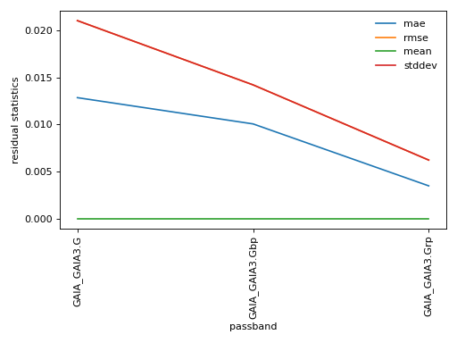
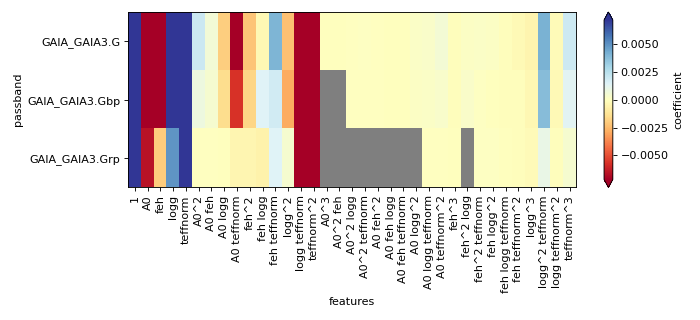

dustapprox.models package
Contents
dustapprox.models package#
We provide various modeling schemes for extinction in a given photometric band.
Todo
add script to generate grid of models
add polynomial training.
compare literature values to ours.
- class dustapprox.models.PrecomputedModel(location=None)[source]#
Bases:
objectAccess to precomputed models
from dustapprox.models import PrecomputedModel lib = PrecomputedModel() # search for GALEX passbands if present r = lib.find(passband='galex') print(r) # load both available models models = [] for source in r.values(): models.extend([lib.load_model(r, passband=pbname) for pbname in source['passbands']])
result fromPrecomputedModel.find()#[{'atmosphere': {'source': 'Kurucz (ODFNEW/NOVER 2003)', 'teff': [3500.0, 50000.0], 'logg': [0.0, 5.0], 'feh': [-4, 0.5], 'alpha': [0, 0.4]}, 'extinction': {'source': 'Fitzpatrick (1999)', 'R0': 3.1, 'A0': [0, 10]}, 'comment': ['teffnorm = teff / 5040', 'predicts kx = Ax / A0'], 'model': {'kind': 'polynomial', 'degree': 3, 'interaction_only': False, 'include_bias': True, 'feature_names': ['A0', 'teffnorm']}, 'passbands': ['GALEX_GALEX.FUV', 'GALEX_GALEX.NUV'], 'filename': 'dustapprox/data/precomputed/polynomial/f99/kurucz/kurucz_f99_a0_teff.ecsv'}]result when loading models with fromPrecomputedModel.load_model()#[PolynomialModel: GALEX_GALEX.FUV <dustapprox.models.polynomial.PolynomialModel object at 0x12917b6a0> from: A0, teffnorm polynomial degree: 3, PolynomialModel: GALEX_GALEX.NUV <dustapprox.models.polynomial.PolynomialModel object at 0x129170820> from: A0, teffnorm polynomial degree: 3]- find(passband=None, extinction=None, atmosphere=None, kind=None) Sequence[dict][source]#
Find all the computed models that match the given parameters.
The search is case insentive and returns all matches.
- Parameters
passband (str) – The passband to be used.
extinction (str) – The extinction model to be used. (e.g., ‘Fitzpatrick’)
atmosphere (str) – The atmosphere model to be used. (e.g., ‘kurucz’)
kind (str) – The kind of model to be used (e.g., polynomial).
- get_models_info(glob_pattern='/**/*.ecsv') Sequence[dict][source]#
Retrieve the information for all models available and files
- load_model(fname: Union[str, dict], passband: Optional[str] = None)[source]#
Load a model from a file or description (
PrecomputedModel.find())- Parameters
fname (str or dict) – The filename of the model to be loaded or a description of the model returned by
PrecomputedModel.find()passband (str) – The passband to be loaded. If None, loads all available passband models.
- Returns
model
- Return type
Submodules#
dustapprox.models.basemodel module#
Base class for deriving various kinds of models.
dustapprox.models.polynomial module#
Polynomial approximation of extinction effect per passband.
In this library, we provide tools and pre-computed models to obtain the extinction coefficient \(k_x = A_x / A_0\) for various passbands.
Extinction coefficients depend primarily on the source spectral energy distribution and on the extinction itself (e.g., Gordon et al., 2016; Jordi et al., 2010) but also other parameters such as \(\log g\), \([\alpha/Fe]\), and \([Fe/H]\).
We define the extinction coefficient \(k_x\) as
with \(A_0\) the extinction parameter at \(550 nm\), and \(x\) the passband.
We use a L1-regularized regression model (Lasso-Lars model) using BIC or AIC for model/complexity selection.
The optimization objective for Lasso is:
AIC is the Akaike information criterion and BIC is the Bayes Information criterion. AIC or BIC are useful criteria to select the value of the regularization parameter \(\alpha\) by making a trade-off between the goodness-of-fit and the complexity of the model.
This allows is to follow the principle of parsimony (aka Occam’s razor): a good model should explain well the data while being simple.

(png, hires.png, pdf) Statistics on polynomial approximation of extinction effect per passband. The top panel shows the residual statistics of the model to the grid values, while the bottom panel shows the meaningful coefficient amplitudes. (Grey pixels indicate values below \(10^{-5}\)).#
{kind=link}
{kind=link}

(png, hires.png, pdf) Statistics on polynomial approximation of extinction effect per passband. The top panel shows the residual statistics of the model to the grid values, while the bottom panel shows the meaningful coefficient amplitudes. (Grey pixels indicate values below \(10^{-5}\)).#
{kind=link}
{kind=link}
- class dustapprox.models.polynomial.PolynomialModel(**kwargs)[source]#
Bases:
dustapprox.models.basemodel._BaseModelA polynomial model object
- meta#
meta information about the model
- Type
dict
- transformer_#
polynomial transformer
- Type
PolynomialFeatures
- coeffs_#
coefficients of the regression on the polynomial expended features
- Type
pd.Series
- property degree_: int#
Degree of the polynomial transformation
- property feature_names: Sequence[str]#
Input feature dimensions of the model
- fit(df: pandas.core.frame.DataFrame, features: Optional[Sequence[str]] = None, label: str = 'Ax', degree: int = 3, interaction_only: bool = False)[source]#
- Parameters
df (DataFrame) – DataFrame with the passband grid data.
features (Sequence[str]) – input features from df (note: if used, teff will be normalized to teff/5040)
label (str) – which field contains the label values
degree (int) – The degree of the polynomial model.
interaction_only (bool) – If True, only the interaction terms are used.
input_parameters (Sequence[str]) – The input parameters to use. If None, ‘teff logg feh A0 alpha’ parameters are used.
- classmethod from_file(filename: str, passband: str)[source]#
Restore a model from a file
- Parameters
filename (str) –
the ECSV filepath containing the model definition
The file should contain the various parameters associated with the model in its metadata.
passband (str) – name of the model to load (passband column in the ecsv file)
- Returns
model – model object
- Return type
- get_transformed_feature_names() Sequence[str][source]#
get the feature names of the internal transformation
- property name: str#
Get the model name also stored in the coeffs series
- predict(X: Union[numpy.ndarray, pandas.core.frame.DataFrame]) numpy.array[source]#
Predict the extinction in the specific passband
Note
if X is a
Dataframe, teffnorm could be automatically added- Parameters
X (Union[np.ndarray, pd.DataFrame]) – input features
- Returns
y – predicted values
- Return type
np.ndarray
- dustapprox.models.polynomial.approx_model(r: pandas.core.frame.DataFrame, passband: str = 'GAIA_GAIA3.G', degree: int = 3, interaction_only: bool = False, input_parameters: Optional[Sequence[str]] = None, verbose=False) dict[source]#
Fit the passband grid data with a polynomial model.
- Parameters
r (DataFrame) – DataFrame with the passband grid data.
passband (str) – The passband to fit.
degree (int) – The degree of the polynomial model.
interaction_only (bool) – If True, only the interaction terms are used.
input_parameters (Sequence[str]) – The input parameters to use. If None, ‘teff logg feh A0 alpha’ parameters are used.
verbose (bool) – If True, print the model parameters and statistics
- Returns
Dictionary with the model parameters and statistics.
- Return type
dict
- dustapprox.models.polynomial.quick_plot_models(r: pandas.core.frame.DataFrame, **kwargs) pandas.core.frame.DataFrame[source]#
Plot diagnostic plots for the models.
- Parameters
r (DataFrame) – DataFrame with the passband grid data.
- Returns
DataFrame – DataFrame with the all model parameters and statistics.
.. seealso:: –
approx_model()